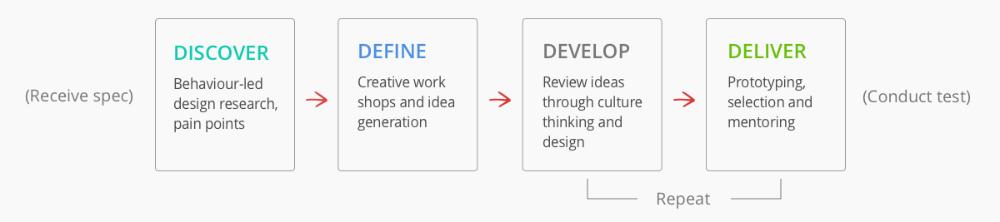
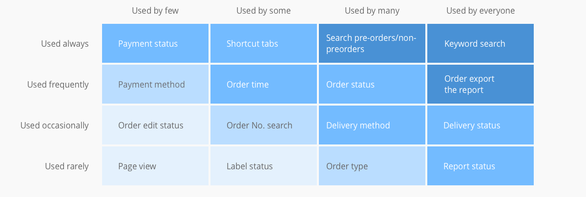
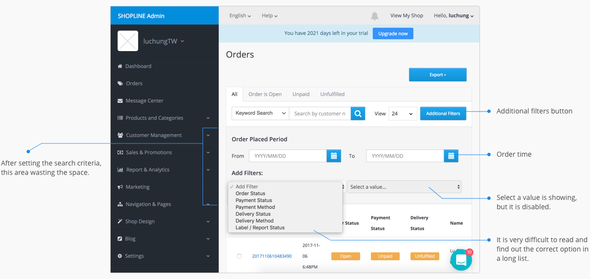
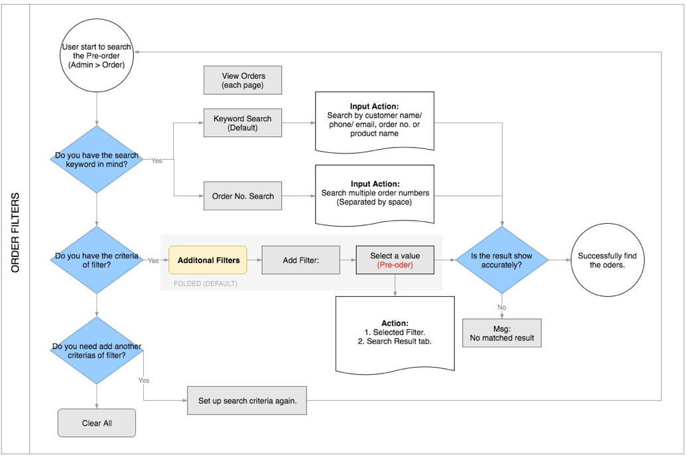
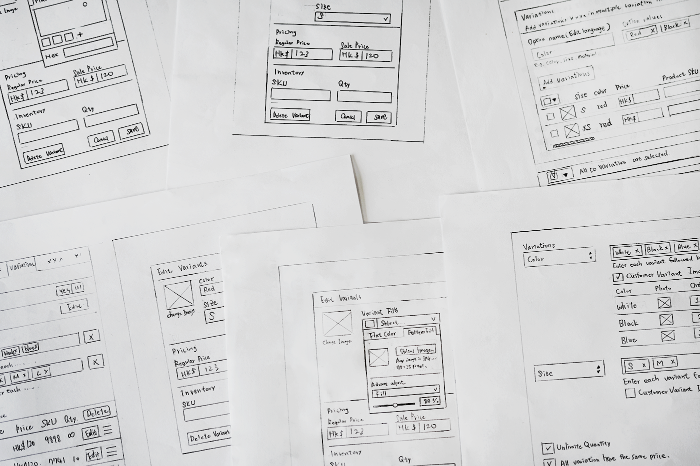
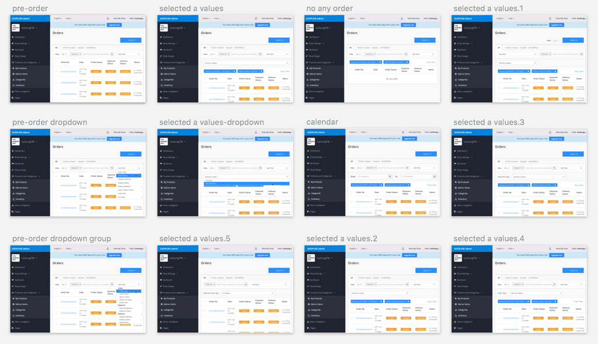
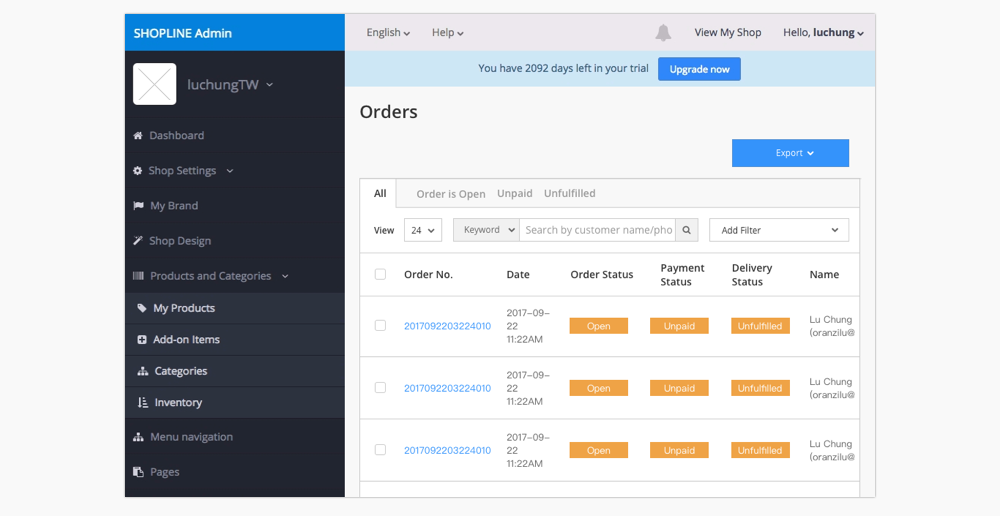
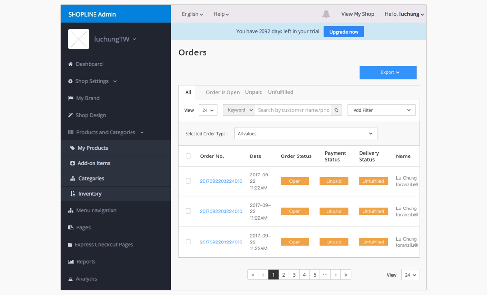
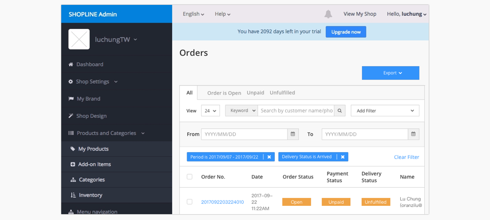
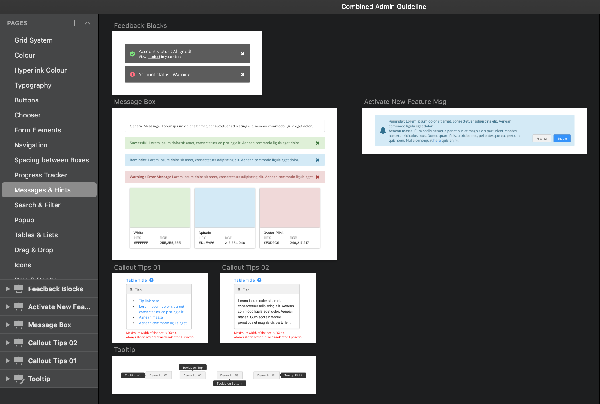

OVERVIEW
I revamped Shopline administration platform and improved the standard storefront website through the design process illustrated above. With hi-fi prototypes on computers, tablets and mobiles, I communicated efficiently with product managers and software engineers to agile work on over fifty separated projects. Though the projects, I did the user interface improvement to make design decision more feasible and usable.
OBJECTIVE
Devise user interface improvement
BACKGROUND
I’ve designed a number of project for admin platform. This Orders interface improvement is a sampling of the task I’ve worked on. Orders is where merchants process and track their customers buy something from their online store, it appears a new order in this area of admin platform. There are some typical ways to collect the payments or search the orders:
- If merchants need to see a borad overview of their complete order information, they can export a CSV spreadsheet of their orders from the Orders page of the admin planform.
- If merchants have a large number of orders, then they will need to know how to sort them to make the list easier to search and manage.
When we received a new requirment from our customer, which they wanted to add a pre-order searching criteria in the additional filter. And we thought about the most significant things is to tackle the usability problem for this Orders page.
Note: Due to the company’s confidentiality, the actual object of my work can’t be disclosed and some of the following designs, numbers, text, have been modified, blurred or omitted on purpose.
DESIGN PROCESS
This is an outline of at our organizational design process. We’ve refined this process in our work with several projects through one year of consulting experience. I partner with my team in each of these steps, enabling us to make the critical decisions about the organization's future. The process is not rigid, we sometimes adapt into our particular needs, resources and business situation.
DISCOVER THE NEED
To start off, I got straight to the original requirement which allows the our merchants to distinguish the order status including pre-orders and non-preorders. Here are two use cases of this feature:
- As a merchant, I would like to be able to clearly identify pre-orders and non-preorders that have been received and not shipped or canceled, so I can stock or ship on this quantity.
- As a merchant, I would like to be able to find out pre-orders and non-preorders which need to be shipped, so I can deliver the orders correctly.
However, when we received a new requirement which merchants want to set a new pre-order searching criteria in the additional filter, the idea pop out into my mind. That is, we decided to focus the long-term vision, making an improvement of the Orders interface of admin platform. After clarifying customer needs, I defined each feature of order page in the red route. Through the red route, I defined each feature of the Orders to help me clarified the outline: how many merchants using each feature, and how frequently merchants need to use them.
Based on the red routes of the Orders generate the below figure which is the prioritization 2x2 matrix to compare the impact of the solution and the effort required to implement the project. Therefore, the improvement of Orders page's interface and development of pre-order feature are expected to be split into two phases. In the first stage, the order is classified as pre-orders and non-preorders for existing setting, merchants are enabled to refine the search criteria to find out the order accurately.

DEFINING THE PROBLEM
I decided to handle the three pain points that were important to impact users and they are also feasible technique implementation, which are the desired outcomes that need to be achieved in order to successfully complete the business initiative. I redefined the pain points below.
Pain Point 1: Users suffered from long process for setting criteria
There are two different ways to sort the orders. The first one is clicking the tabs as the shortcut button, but they only have three options. In addition, users use an additional filter frequently to make some setting criteria, however, they are hiding in the second layer and need to click the button to unfold them first.
Pain Point 2: Users had trouble for reading the list and selecting a value
There are a lot of options in the filter dropdown, it is very difficult to read and find out the correct one in a long list. Moreover, when a user goes though the additional filters process, they selected the option to add a filter in the first dropdown, and they felt confused why the second dropdown for selecting a value is disabled.
Pain Point 3: Discoverability issue with hidden layer
After setting criteria search to order, There is an area including order time and additional filters which occupying the space with but do not need while a user is browsing the orders' searching result.
IDEATING THE SOLUTION
I also created a flow chart to show the solution model for the order filters. In this project, I took the pre-order as an example, the process as below illustrates how a user sort out the orders with the filter.
Then it was time to start drafting. I drew down initial idea with several potential solutions to each of the pain points and made some rough user interface sketches.
PROTOTYPING AND VALIDATION
I presented my solution with Sketch software to create hi-fi mockups of my proposals and used Invision to create some clickable prototypes. Below are the hi-fi mockups of my final solutions including making categories in the dropdown for Add Filter and the redesign of Additional Filters button.
Pain Point 1: Users suffered from long process for setting criteria
Design solution: Replace the additional filters button into adding filter dropdown which users do not need to click the extra button for setting search criteria.
Pain Point 2: Users had trouble for reading the list and selecting a value
Design solution: Sort the filter options with a three categories, they are Order, Payment and Delivery. Besides, hiding the second dropdown menu rather than making it disabled.

After selecting the first filter criteria, there is a new area showing with second dropdown for selecting a value of the filter. After a user determine the value, the area will be hidden.
Pain Point 3: Discoverability issue with hidden layer
Design solution: Move view page to the front of filter group, and array keyword search and add filter together to make the structure of the layout consistently. And showing criteria tags on the unfold layer, and removing the title words to lean the content.
DESIGN GUIDELINES
When we built the admin platform, our design team created this design library. The guidelines intend to provide clear instructions to both designers and developers. For example, how to adopt specific principles, such as intuitiveness, learnability, efficiency, and consistency.

TAKEAWAYS
The Orders page is a typical function for merchants to search and manage their orders. They will definitely need a fluent process to know how to sort the order. In general, the order list is organized from newest to oldest by default, merchants can change this and sort their product list by order type (open, confirmed, completed, cancelled), by payment status, by fulfillment status or by order time. And if merchants have a lot of orders in the list and they need to find specific orders quickly, it is especially more useful to lean the searching process flow.